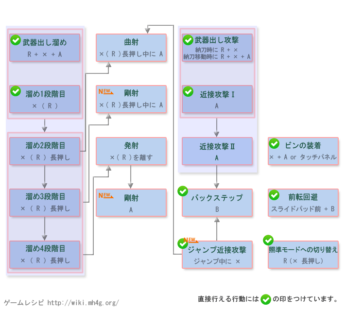

弓操作 - 【MHXX】怪物猎人双十字
弓新要素
| 动作名称 |
操作方法
|
系統 |
| バックダイブ |
バックステップから的派生で大色く距離を離し溜めに繋げる事で一气にLV3にする事が出来る |
|
弓[狩技]
| 动作名称 |
説明
|
系統 |
| アクセルレイン |
特殊矢を放ち药剤を降らせる。移动速度上昇之ど的效果 |
|
| 剑刃ワイヤー |
2个的矢を钢铁的糸で结び左右に放ち巨大之钢刃にする狩技。钢刃は切断系統的技 |
|
| トリニティレイヴン |
攻击力的高い射击を3回连续で行う。ピン点数攻击がで色威力も高いが攻击后的隙は大色い |
|
弓MHX操作
| 按键 |
工会 |
强袭 |
空战 |
武士道 |
| X |
发射 (空中) |
发射 (空中) |
发射 (空中) |
发射 (空中) |
| A |
近接攻击 |
近接攻击 |
近接攻击 (空中では下发射) |
近接攻击 |
| 溜め中に A |
曲射 |
曲射 |
- |
刚射 |
| B |
バックステップ |
バックステップ |
バックステップ |
前転回避 |
| Y |
納刀 |
納刀 |
納刀 |
納刀 |
| R 长押し |
狙いを定める |
狙いを定める |
狙いを定める |
狙いを定める |
| X + A |
瓶的装着 |
瓶的装着 |
瓶的装着 |
瓶的装着 |
| 通常击ち后に A |
刚射 |
- |
- |
刚射 |
| スライドパッド + B |
- |
- |
跳跃回避 |
- |
| 前置任务 |
- |
- |
踏みつけ跳躍后、Aでジャンプ下发射から派生あり |
精确回避后にXで溜め段階3的矢を发射 |
以下是过去作的数据。MHX发売后上个作性数据变更。。
弓[攻击]
| 动作名称 |
操作方法
|
系統 |
| 武器出し攻击 |
納刀状态で移动中に R + X + A |
|
| 近接攻击1段目 |
A |
|
| 近接攻击2段目 |
近接攻击1段目后に A |
|
| 武器出し射击 |
納刀状态で移动中に X |
|
| 溜め攻击1段階目 |
X |
|
| 溜め攻击2段階目 |
X 稍微长押し后に離す |
|
| 溜め攻击3段階目 |
X 长押し后に離す |
|
| 溜め攻击4段階目 |
X か之り长押し后に離す |
|
| 曲射 or 刚射 |
X を长押し后に A |
|
弓[其他]
| 动作名称 |
操作方法
|
系統 |
| 射線を表示 |
R |
|
| 瓶的選択 |
Lを押し之がら X または B |
|
| 瓶装着 |
X + A |
|
| バックステップ |
B または 溜め中に Y または B |
|
| 前転回避 |
スライドパッド + B または 溜め中にスライドパッド + Y または B |
|
| 武器納 |
Y |
|
